Early 1940's—Ladies' Garment Cutting and Making
by
F. R. Morris
Chapter XIII—Collar Construction for All Coats
THE construction of collar patterns is governed by the shape and type of collar required, the length of the lapel turn, the measurement of the neck circumference of the coat gorge, and lastly the necessity or otherwise for manipulation by shrinking and stretching in making.
The necessity for manipulation can be diminished if the collar is cut to agree with the particular shape and size of the gorge run to which it is required to sew. In the majority of instances where collars require an excessive amount of manipulation the fault is due to the practice of leaving collar cutting either to the tailor or tailoress, who cannot be expected to have practical knowledge of adjusting the shape of the collar to agree with differently shaped neck curves and usually adapts one standard collar pattern for every coat. Collars should be cut when the coat is cut, and not at some later time.
The standard tailored collars for ladies' coats are the Step Collar, the Double-Breasted Collar, the Double-Breasted Ulster or Storm Collar, the Stand Collar, the Stand-up Storm Collar, sometimes called the Broadway Collar, and, for loose-fitting raglans or swagger coats, the Circular or Prussian Collar.
There are two points to note with regard to the effect of the length of the lapels on collar construction. If a low-turning lapel is required, the collar will need less length of "fall" edge than in the case of a high-turning lapel.
As the turn of the lapels becomes higher and closer to the neck, the necessity for length at the fall edge of the collar increases until the maximum is reached with the circular Prussian collar.
The step collar is so-called because the distance the collar-end is from the end of the lapel forms a "step" and may be from 1¼ to 1½ inches in any single-breasted coat.
The stand of the collar is that part which fills up the neck of the coat to the desired height. Owing to the shape of the neck it is not possible to add this extension satisfactorily to the coat back neck curve, though many designs at the moment are showing the collar and coat cut in one. The height of the stand depends on the shape of the neck and varies with long- or short-necked figures from 1½ inches in the first instance to ¾ inch in the latter.
The fall of the collar is that part which falls over or turns back from the edge of the stand down over the shoulders. The width of the fall is governed by the type of collar and by the distance traversed by the fall edge over the shoulders. At a certain width of collar fall, a similar distance round the upper shoulders is covered, and consequently the wider the fall the correspondingly greater the distance over the shoulders covered by the fall edge. The author always takes a check measure of the shoulders where the collar edge will lay when sewn to the neck as a guide to the length of fall edge required in the collar. This can be easily accomplished by marking the shape of the lapel on the shoulder of the coat, measuring round the shoulders from the step of the lapels to the centre back seam of the coat at a distance down estimated by calculating the stand height up from the back neck curve, and then measuring down the length of fall.
The crease edge of the collar is the line or edge where the collar stand becomes the fall by being creased over to run with the crease line of the lapel. Though it is the general practice to mark the crease line of the collar when it is cut, this line does not always tally with the crease line of the lapel, and consequently readjustment of the crease lines is needed to make a continuous run. The author always makes a point of not creasing the collar until it is sewn to the neck, and then he marks a crease line to agree with the lapel crease.
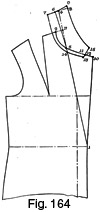The Step Collar, giving the Basic Principles of Collar Construction (Fig. 164)
Fig. 164 shows the forepart of a single-breasted coat with a lapel turning to fasten at the waist line.
- The step of the lapel is 1¼ inches.
- The stand height is 1 inch.
- The fall depth is 1¾ inches.
- Point 1 is the commencement of the lapel turn at the waist line.
- 2 is the front neck point.
- 3 from 2 = the stand height = 1 inch as established in the coat basis draft.
- Rule the crease line of the lapel from 1 through 3 to 4.
- 4 from 3 = the width of the back neck curve plus ¼ inch.
- The addition of ¼ inch to the back neck width obviates any tendency of the collar to come up short in the sewing to the neck curve, and provides for a certain quantity of length for easing in round the gorge between the crease of the lapel and the neck point.
- Point 5 is located where the crease line of the lapel cuts through the gorge.
- Pivoting from 5, sweep from 4 to 6 ½ inch.
- Shape the crease of the collar from 5 to 6 in a straight line.
- The crease is marked in a straight line because the old saying that "a straight line is the shortest distance between two points" is very applicable to the construction of collar patterns, as the crease edge of the collar must be kept as short as possible, which can only be achieved by drafting this line straight.
- Square back from 6 to 7 the stand height plus one seam, i.e. 1¼ inches.
- If the under-collar is felled to the coat, there will be no need to make the addition for seaming, and the collar stand must be cut to finished width.
- By line 5 to 6, square up from 6 to 8 the fall depth plus ¼ inch, i.e.
2 inches.
- The addition is made for a seam round the fall edge, though, in most instances, the author always cuts the collar slightly wider than the required width to allow for the slight narrowing of the collar under manipulation, and to give the worker a fair chance to turn out a well-shaped fall.
- 9 from 8 = ½ inch. Shape from 9 to 6.
- 10 is the end of the lapel.
- 11 from 10 = the length of the step plus a ¼-inch seam to be reduced from the lapel edge, i.e. 1½ inches.
- 12 from 11 = the fall end of the collar = ¼ inch from 11 to allow for
the reduction of a seam in making.
- Therefore, from the above, the principle for step or stand collars is to measure back from the edge of the lapel the required length of step, which automatically allows for a seam to be reduced from both lapel and collar ends, resulting in the finished step length being identical with the preliminary length marked.
- 13 from 12 = two seams, one to be reduced from the collar and one from the lapel gorge.
- 14 from 5 = two seams.
- Shape the sewing edge of the collar from 13 to 14 and 7.
- 15 from 13 = the width of the collar fall edge at the step plus two seams, i.e. 1¼ inches plus ½ inch = 1¾ inches.
- Shape the fall edge from 15 to 9 to complete the shape.
This draft represents the foundation collar system from which all adjustments for Double-breasted collars, short lapel turns and deeper falls are made.
Very often the under-collar is made of a thin melton to enable the collar to be felled to the gorge on the raw edge for thinness. This is the method adopted in the best class of trade, but, in the author's opinion, this procedure is not essential if the collar is properly cut and seamed to the coat. If a melton is used, a seam must be reduced from the sewing edge from 13 to 14 and 7, the stand being made a 1 inch finished width to fell over a small inlay left on round the back and front gorge curve. It is the leaving of this inlay to which the author objects, for it is the source of many shoulder creases and defects when workers persist in sewing out shoulders and inlay in one run, instead of ceasing the seam of the shoulder at the commencement of the inlay.
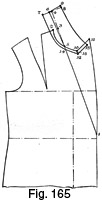The Double-Breasted Collar (Fig. 165)
Fig. 165 shows the reproduction of a collar suitable for double-breasted lapels and turn. The lapel turns to a low fastening at the waist, and the gorge is cut without a V cut.
- Point 1 is the end of the lapel crease line.
- 2 is the front neck point.
- 3 from 2 = the stand height = 1 inch.
- Mark through the lapel crease line from 1 to 3 and 4.
- 4 from 3 = the back neck width plus ¼ inch.
- 5 is located where line 1 to 3 intersects the gorge run from 2 to the step of the lapel.
- Pivoting from 5, sweep from 4 to 6 ½ inch.
- Shape the crease edge of the collar from 5 to 6 in a straight line.
- Square back from 6 to 7 by line 5 to 6 the stand height plus a ¼ inch seam, i.e. 1¼ inches.
- Square up from 6 to 8 the fall depth plus a ¼ inch seam, i.e. 2 inches.
- Spring out ½ inch from 8 to 9, and shape from 9 to 6 and 7 for the centre seam of the collar.
- 10 is the commencement of the lapel peak.
- 11 from 10 = the length of the peak.
- 12 from 10 = two seams, i.e. ½ inch.
- 14 from 5 = two seams, i.e. ½ inch.
- Shape from 12 to 14 and 7.
- 13 from 11 = ¾ inch and two seams below the edge of the lapel peak.
- From 12 to 13 is made two seams below the lapel peak, so that when a seam is reduced from the lapel from 10 to 11 and a seam from 12 to 13, the finished shape of the collar and lapel will meet edge to edge at 12 to 13.
- The short distance down from 10 to 15 illustrates where the lapel peak is nipped in for turning out the collar and lapel, and, when seams are reduced from the collar and gorge, point 15 will be the corner of the lapel and collar.
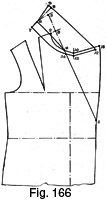The Double-Breasted Ulster or Storm Collar (Fig. 166)
- Height of the collar stand = 1 inch.
- Depth of the fall = 3½ inches.
The need for an additional amount of length round the fall edge of the collar where it covers the shoulders is greater as the fall width becomes wider, and, to allow for this extra length, the crease line of the collar from 5 to 4 must be deflected or bent further back to lengthen the fall edge. As a guide to the amount of bending of the crease line, subtract the stand height, 1 inch, from the required fall depth, 3½ inches, giving a residue of 2½ inches, which represents the diverging of the crease line from the straight for the specified fall depth to allow for sufficient edge length to lie smoothly over the upper shoulders.
- Point 1 is the commencement of the lapel turn.
- 2 is the front neck point.
- 3 from 2 = the collar stand height = 1 inch.
- 4 locates the intersection of the crease line joining 1 to 3 with the gorge run from 2 to the peak of the lapels.
- Rule the crease line up from 1 and 4 through 3 to 5.
- 5 from 3 = the back neck width plus ¼ inch.
- By pivoting from point 4, sweep back from 5 to 6 the difference between the stand height and the fall depth, i.e. 2½ inches.
- Join 4 to 6 in a straight line for the crease of the collar.
- By line 4 to 6, square back from 6 to 7 the stand height plus ¼ inch, i.e. 1¼ inches.
- By line 4 to 6, square up from 6 to 8 the fall depth plus a seam, i.e. 3¾ inches.
- Spring out from 8 to 9 ¾ inch, and shape the centre seam of the collar from 9 to 6 and 7.
- 10 is the commencement of the peak of the lapel and the end of the gorge.
- 11 is the end of the lapel peak.
- 12 is ¾ inch, or to taste, back from 11 and two seams below the line of the lapel from 11 to 10.
- 13 from 10 = ½ inch. Shape from 13 to 12 and the fall collar edge from 12 to 8 and 9.
- 14 from 4 = ½ inch. Shape the collar stand from 13 to 14 and 7 to complete the draft.
The collar shape drafted allows for the end of the collar to meet flush with the lapel peak when made up. The same construction applies for other types of ulster collar which show a gap between the end of the collar and the lapel peak at 11 and 12.
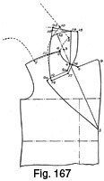Ulster Collar by Direct Measurement of the Length of Fall Required (Fig. 167)
To estimate the actual length of collar fall edge required to agree with varying fall depths, it is necessary to measure on the actual shoulders of the coat where the collar edge will lie and then transfer this measurement to the collar draft. Fig. 167 shows the drafting of an ulster collar by this method.
- Point 1 is the position of the turn at the top button.
- 2 is the front neck point.
- 3 is the usual collar stand width, 1 inch.
- 4 is located where the crease line from 1 to 3 intersects the gorge run from 2 to the commencement of the lapel peak.
- The back of the coat is shown by dash lines and numbered from 5 at the centre back neck to 6, the shoulder seam and 7 at the shoulder end.
- The back is laid in position against the front shoulder so that 6 and 2 are touching, and 7 overlaps the front shoulder by ¼ inch.
- 8 is the end of the gorge run from 2 and 4.
- 9 from 8 = the length of the lapel peak.
- Mark the shape of the lapel and gorge run on the shoulder part of the coat as indicated by 8A and 9A.
- The fall depth is 3½ inches; therefore, measure down from 5 to 10 this quantity less the stand height of 1 inch, i.e. 2½ inches.
- Similarly, 11 from 2 and 6 = 2½ inches.
- 12 back from 9A = the width of the collar fall at the lapel end = ¾ inch.
- The distance from 12 to 11 and 10 represents the length of the collar fall edge in the finished collar draft.
- 13 from 3 = the back neck width from 6 to 5 plus ¼ inch.
- By pivoting from 4, sweep from 13 to 14 equal to the distance from 5 to 10.
- Square back from 14 to 15 the stand height plus ¼ inch, i.e. 1¼ inches.
- 16 from 4 = ½ inch or two seams.
- 17 down from 8A = ½ inch or two seams.
- 18 from 12 = ½ inch or two seams.
- Square out from 14 to 19 the fall depth plus ¼ inch, i.e. 3¾ inches.
- Apply the length from 12, 11 and 10 from 12 less ½ inch to locate the position of 20 above 19.
- Shape the fall edge of the lapel from 18 and 12 to 19 and 20.
- Shape the stand edge of the collar from 18 to 17, 16 and 15 to complete the shape of the ulster collar.
The collar will require a slight amount of straining with an iron where it lies over the shoulder seams; otherwise, the outside fall edge length is sufficient for the requirement of covering the shoulders of the coat at the collar depth stated.
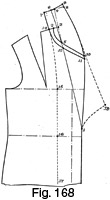The Roll or Shawl Collar (Fig. 168)
Fig. 168 illustrates the draft of a roll or shawl collar. The under-collar is cut in the usual manner, but, in place of the usual top-collar, the facing is carried right round to the back neck and seamed down the centre back to form the top-collar and the facing in one. As the collar seams at the gorge do not show, the shape of the gorge may be varied from the basic draft instructions and lowered from the crease line to the lapel edge, so facilitating the sewing together of the collar and lapel.
- 1 is the first button position.
- 2 is the front neck point.
- 3 is the usual stand height from 2 = 1 inch.
- Rule the crease line through from 1 to 3 and 4.
- 4 from 3 = the back neck width plus ¼ inch.
- 5 is located where the crease line from 1 to 4 intersects the gorge run from 2 to the end of the lapel.
- 6 from 4 = ½ inch.
- Join 5 to 6 in a straight line for the crease line of the collar.
- 7 squared back from 6 equals the stand height plus ¼ inch = 1¼ inches.
- Square up from 6 to 8 the depth of the fall required, 1¾ inches plus ¼ inch, i.e. 2 inches.
- 9 from 8 = ½ inch of spring. Shape from 9 to 6 and 7.
- 10 is the lapel end.
- 11 from 10 = two seams or ½ inch.
- 12 from 5 = two seams or ½ inch. Shape the stand edge from 11 to 12 and 7.
- Shape the fall edge from 11, 8 and 9.
- The dash lines from 1 to 13 and 10 indicate the shape of a smart roll
lapel as cut at the moment.
- The facing and top-collar combined are cut to follow the shape of the lapel and collar from 1 to 10 and 9, plus a suitable allowance for making-up purposes and turning out the facing.
- Cut the centre back seam of the facing identical with the collar from 9 to 6 and 7.
- Shape from 7 to 14 identically with the collar stand and continue the facing run back from 14 to 15 on the breast line down to 16, 17 and the bottom edge to complete the shape of the facing.
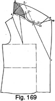Ulster Stand Collar (Fig. 169)
The ulster stand or "Broadway" collar is a rather difficult collar to cut, for, being required to stand up at the back neck and curve round to lie flat on the shoulders at the front, the necessity for a great deal of length round the fall edge is apparent.
The collar described fulfils all the requirements stated and is recommended for the ulster type of coat. A collar constructed on the usual storm-collar lines would not remain standing at the back owing to insufficient length of fall edge, and would curl over in wear.
- 1 is the position of the top button and the commencement of the lapel run.
- 2 is the front neck point.
- 3 from 2 = the usual stand height = 1 inch.
- 4 is the intersection of the crease line of the lapel with the gorge run from 2 to the commencement of the lapel peak.
- Continue the crease line of the lapel up from 1 and 4 through 3 to 5.
- 5 from 3 = the back neck width plus ¼ inch.
- By pivoting from 4, sweep from 5 to 6 4½ inches.
- 7 is two seams below 4.
- Join 7 to 6 and by this line square up from 6 to 8 the height of the collar, i.e. 3½ inches plus two seams.
- 9 from 8 = 1¼ inches. Shape from 9 to 6.
- 10 is the end of the lapel peak.
- 11 is the commencement of the lapel peak and the end of the gorge run from 2 and 4.
- 12 from 11 = two seams or ½ inch.
- Shape the sewing edge of the collar from 12 to 7 and 6, hollowing ½ inch between 7 and 6 as indicated.
- 13 from 12 = the width of the collar at the peak end = 3½ inches plus two seams.
- Shape from 12 to 13 and from 13 to 9 for the collar edge to complete the shape of the stand collar.
Cut the collar on the fold of the material from 9 to 6 for both top and under-collar, and it is advisable to add an extra thickness of canvas across the centre back of the collar as shown by the shading to aid the collar to remain standing.
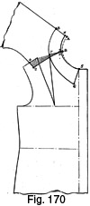The Circular Collar (Fig. 170)
The vogue of loose-fitting and swagger coats has introduced the high-closing circular neck line to the majority of women. These coats usually have a round collar of either Prussian or flat, circular type. The Prussian collar, as its name implies, is designed on uniform lines to stand up on the neck with a circular fall of 2 or more inches, whilst the circular collar, sometimes called the "Peter Pan" collar, is not cut with a stand and simply lies flat round the neck and shoulders. Many juvenile coats are shown with collars of this type. The first essential is to fill up the neck opening of the coat ½ inch at the back and sides.
Take the back and forepart patterns and lay the shoulder seams together, overlapping 1 inch at the shoulder end between points 2 to 4.
- Points 1 and 3 are identical.
- 5 is the centre of the front at the neck opening.
- Fill up the neck of the coat ½ inch from X to A, 1 and 3 to B, tapering away to nothing at 5.
- Mark down from 5 to 6 the depth of the collar fall at the centre front, i.e. 2¼ inches.
- 8 from A = the depth of the collar at the centre back plus two seams = 2¼ inches.
- 7 from B = the width of the collar at the shoulder seams = 2¼ inches.
- Shape the collar edge from 5 to 6 and 6 to 7 and 8.
- Cut this collar on the fold of the material from A to 8 and with the bias at 7 where the collar passes over the shoulders to the front.
The following draft will show a circular collar which has the virtue of possessing a stand effect at the centre back with the advantage of laying perfectly flat on the front shoulder. The usual Prussian collar needs a good deal of stretching of the stand where it sews to the gorge over the shoulders to prevent a "kicking off" at the crease edge, but the collar described requires very little manipulation and is designed to sew straight to the gorge.
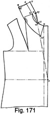Circular Stand Collar (Fig. 171)
This collar has a stand appearance at the back neck with the flat "Peter Pan" effect at the front neck. Firstly, it is necessary to mark in the usual crease line of the lapel as for a single-breasted coat.
- 1 is the first button position for a buttoned coat.
- 2 is the front neck point.
- 3 from 2 = the usual collar stand height = 1 inch.
- Join 1 to 3 to locate point 4 on the gorge run from 2 to the centre front fastening.
- Join 4 to 2, and continue up from 2 to 5 half the back neck width plus ¼ inch.
- From 4 to 2 and 5 is the crease line of the collar.
- Square back from 5 to 6 the required fall depth plus one seam, i.e. 2 inches.
- Square back from 5 to 7 the stand height plus ¼ inch, i.e. 1¼ inches.
- Spring back from 6 to 8 ½ inch, and shape the centre seam of the collar from 7 to 5 and 8.
- 9 is the centre front opening.
- Mark down from 9 to 10 the length of the collar fall at the centre front, i.e. 2½ inches.
- Shape the fall edge from 10 to 6 and 8.
- 11 from 4 = ¼ inch.
- 12 from 3 = ¼ inch seam. Shape the sewing edge of the collar from 9 to 11, 12 and 7.
This collar will require slight stretching over the shoulders in the position marked and also between 11 and 12 at the stand seam.
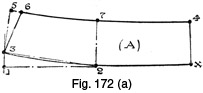The Plain Stand Collar (Fig. 172 (a))
Fig. 172 (a) shows the draft of a plain stand collar suitable for cardigan suits, golf coats and any coats with the necessity for a collar to stand at the back from 1½ to 2½ inches in width. Over this width, adjustment must be made for increased top edge length as indicated by Fig. 172 (b).
- Measure round the circumference of the gorge and then rule a straight line from X to 1, making it the circumference length plus ¼ inch seam.
- 2 is half of X to 1.
- 3 from 1 = ½ inch. Shape from X to 2 and 3.
- 4 from X = the height of the stand collar plus ½ inch = 1¾ inches plus ½ inch, i.e. 2¼ inches.
- Square up from 3 to 5 the same distance as 4 from X.
- 6 from 5 = ½ inch to ¾ inch, depending on the shape of the gorge run.
- 7 from 2 = from 4 to X.
- Shape the top edge from 4 to 7 and 6 and from 6 to 3.
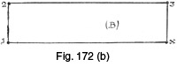The Straight Stand Collar (Fig. 172 (b))
For all collar widths over 2½ inches the stand collar is cut perfectly straight.
Square from X.
- 1 from X = the circumference length of the collar.
- 2 from 1 = the height of the collar, 2½ inches plus ½ inch for seams = 3 inches.
- 3 from X = the distance from 1 to 2.
- Shape from 1 to 2 and X to 3.
- Shape from 3 to 2 to complete the draft.
This collar is suitable for the lancer-front type of coat in place of the turn-down circular collar.
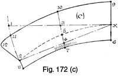The Prussian Collar (Fig. 172 (c))
The Prussian collar is drafted on similar lines to those of the circular stand collar described by Fig. 171, with the exception that the stand is carried right round to the centre front instead of disappearing at the front gorge, to enable the collar to lie flat to the centre fastening. This collar requires well manipulating to produce a good result. The crease line must be shrunk in, and the seam of the stand requires well stretching at the point where it sews to the gorge in proximity to the shoulder seams of the coat.
Square lines from X.
- 1 from X = the circumference of the gorge plus ¼ inch.
- Pivoting from X, sweep from 1 to 2 5 inches.
- Join X to 2.
- 3 is half of X to 1.
- 4 is half of X to 2.
- Join 3 to 4 to locate point 5 midway of 3 to 4.
- Shape the crease edge of the collar from X to 5 and 2.
- 6 from X = the height of the collar stand at the centre back, 1 inch, plus a ¼ inch seam = 1¼ inches.
- 7 from 5 = the height of the collar stand at the shoulder point, 1 inch, plus a ¼ inch seam = 1¼ inches.
- 8 from 2 = the height of the collar stand at the centre front opening, ¾ inch, plus a ¼ inch seam = 1 inch.
- Shape from 6 to 7 and 8 for the collar stand sewing-edge seam.
- 9 from X = the depth of the fall, 1 ¾ inches plus a ¼ inch seam = 2 inches.
- 10 from 5 = the same distance as 9 is from X.
- 11 from 2 = from 9 to X.
- Spring out 1 inch to 12 from 11, and shape the fall edge of the collar from 9 to 10, 11 and 12 round to 2.
The stand requires stretching between 6 and 8 at 7 until the length of this seam approximates to the length of the fall edge at a similar distance up from X, 5 and 2.
Cut the collar on the fold of the material for both top- and under-collars, with the bias of the material at 10 and 7.
Fur Collar Shapes
Town coats are usually distinguished by fur collars, and it is not always possible for the tailor to copy the shape of the made-up outer fur collar exactly without a lot of trouble and uncertainty. Therefore, it is advisable to work on standard block patterns of collar shapes and make the necessary adjustments of size and shape. On the other hand, the continued popularity of imitation fur fabrics means that both the outer and under-collars can be cut and made to a definite shape instead of being left to the fur-collar maker's idea of style. Imitation Persian lamb and astrachan are two favourite imitation fur fabrics always in vogue, and some are nearly indistinguishable from the real article.
With regard to the actual cutting of fur collar shapes, generally speaking, these cannot be systematized to order, but, instead, an outline is given to a standard size, and adjustments must then be made to agree with the dimensions of the neck curve and lapel width.
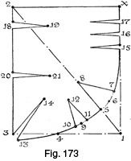Ruck Collar Shape (Fig. 173)
The accompanying draft illustrates a ruck collar shape. This collar is very suitable for making up in astrachan and, in conjunction with ultra-heavy revers, combines to present a very smart appearance. The success of the collar depends to a great extent on the direction of the darts, and the correct locations and angles are indicated in Fig. 173.
When making this collar, use an interlining of collar canvas and also pad the fall with double-ply wadding.
Square from X.
- 1 from X = the length measured round the gorge from the centre back point to the commencement of the step, 10 inches, plus 4 inches =14 inches.
- 2 from X = the desired depth of the collar from the neck seam to the fall edge = 12 inches.
- Square from 2 to 3 equal to X to 1.
- Join 1 to 2.
- 4 from 1 = 7 inches.
- 5 from 1 on the line joining 1 to 2 = 3 inches.
- Shape from 4 through 5 to X.
- 6 from X round the sewing-on edge = the length round the gorge = 10 inches applied net.
- 7 from 5 = 2¾ inches of the difference shown between 6 and 4.
- 8 from 5 = 4 inches.
- Join 7 to 8 for the dart.
- 9 is midway of 5 to 4 on the line from 7 to 4.
- Take out 1½ inches of the difference remaining between 6 and 4.
- Shape the dart from 10 and 11 to 12, 3 inches in length from 9.
- 13 from 3 = ¾ inch.
- Take out a ¾-inch dart at 3 and shape to 14, 5½ inches in from 3.
- Take out three ½ inch darts at 15, 16 and 17, each dart being 4 inches in length and 1 inch apart on the collar.
- 18 from 2 = 1½ inches.
- Take out a ¾-inch dart and shape to 19, 4 inches from 18.
- 20 from 3 = 6 inches.
- Take out a ½-inch dart at 20 and shape it to 21, 4 inches from 20.
All the darts are sewn out in the indicated marks with the exception of the three darts from 15, 16 and 17, which should be cut out and then seams taken.
When sewing out the darts in imitation astrachan, allow for ½ inch seams to minimize the risk of the seams fraying out in making.
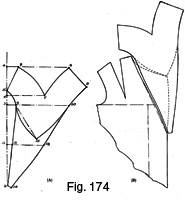Roll Collar Shape (Fig. 174)
The roll collar shape is one of the most useful for adapting to coats, for the shape of the lapel is not considered, the collar sews all round the gorge and down the fronts to the first button, and the lapel proper is cut away from the coat fronts in the crease line.
Fig. 174 (b) illustrates how the lapel is cut away from the fronts, leaving the crease line running down from the neck point to the button position.
To draft the collar shape, proceed as follows—
Square from X.
- 1 from X = the width of the back neck curve from the centre to the shoulder seam.
- 2 from 1 = 2½ inches.
- 3 from X = the length down the crease line of the lapel from the back neck centre down the fronts to the first button position.
- 4 from X = 5½ inches.
- Square up from 4 to 5 5½ inches, and shape from X to 5.
- 6 from X = 1½ inches.
- Square up from 6 to 7 8½ inches.
- 8 squared out from 4 = 14½ inches.
- Join 7 to 5 and to 8.
- Shape from 7 to 5, adding 1 inch of round to the seam.
- Shape from 7 to 8, adding ½ inch of round to the seam.
- By line 7 to 8, square back to 9 6½ inches, the required depth of the collar at the back.
- Square out from 1 to 10 14 inches.
- 11 is midway of 1 to 3.
- 12 from 11 = 1 inch.
- 13 from 11 = 8½ inches.
- Shape from 3 to 12, 2 and X for the sewing edge of the collar.
- 14 from 3 = two seams.
- Shape the fall edge from 14 to 13, 10 and 9.
- Shape from 9 to 8.
- From X to 5 is cut on the fold of the material.
- For a roll collar shape to sew to a cut-on lapel, the collar lapel section must be cut away from the back part in the marks indicated.
- By pivoting from 9, sweep from 13 to 15 1½ inches or the distance round the gorge and lapel from the centre back neck plus 1½ inches for collar ease.
- Join 15 to 2 and add 1 inch of round to the seam between these points.
- Join 15 to 10 and add ½ inch of round between these points.
Line with wadding and canvas to give "body" to the collar and, when sewing to the crease line, slightly ease in the collar to the gorge at the shoulder seam point so that the collar does not lie too closely to the head.
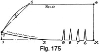The New Bolster Roll Collar (Fig. 175)
Fig. 175 illustrates the new bolster roll type of fur collar shape as now worn with the wide lapels and shoulders of the current mode.
This style of collar stands well up in the neck in a deep double fold, and in wear the head of the wearer is hidden inside the protective depth of the fall.
The total width of the collar is 15 inches before being folded, the outer edge is covered with fur, and the inside fold lined with the same kind of self tweed used for the garment or with a lining to tone.
A low-cut and wide lapel is necessary to take the extra length of this collar style, and this adjustment must be noted in the coat draft.
To draft—
Square from X.
- 1 from X = 19½ inches.
- 2 from 1 = 1½ inches.
- 3 from X = 10½ inches.
- Shape the sewing edge from X through 3 to 2.
- 4 from X = half the full depth of collar required = 7½ inches.
- Square 13 inches from 4 to 5.
- Join 5 to 2 and add ½ inch of round to the seam between these two points.
- Take four small darts out of the sewing edge and the fall edge at 6, 7, 8 and 9.
- Each of these darts should be ½ inch in depth and 2½ inches long.
- The collar should be eased on to the lapels in the region of 3 to 2 as marked on the draft.
- From 5 to 2 is seamed and also from 5 to 4 on the fold of the material.
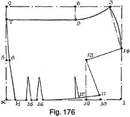Fancy Roll Collar (Fig. 176)
The fancy roll collar illustrated by Fig. 176 is a fashionable shape at the moment on varying coat styles, as it can be adapted to practically any type or shape of lapel.
The diagram shows the shape drafted. Darts are taken out to achieve the desired shape and effect, the largest dart making a decided peak in the collar opposite the chin.
All darts should be sewn out in the marks or, alternatively, allow seams when cutting.
To draft—
Square from X.
- 1 from X = 17 inches.
- 2 from X = 14 inches.
- 3 from 2 = 15½ inches.
- H from X = 1½ inches.
- 5 from X = 6 inches.
- 6 from 5 = ½ inch.
- Shape from H through 6 to 7.
- 8 from 2 = 10 inches.
- Square 9 from 8 equal to 2 to 7.
- 10 from 1 = 3½ inches.
- 11 from 10 = 1 inch.
- Shape from 11 round to H as shown.
- 12 from 10 = 2½ inches.
- Square up 6 inches from 12 to 13.
- 14 from 1 = 7 inches.
- Join 14 to 3.
- Add on ½ inch of round between 14 and 3.
- Shape 3 to 7 as shown through 9.
- Join 14 to 13 and 13 to 11 as shown.
- Take out a 1-inch dart at 15 and make the dart 4 inches in length.
- Take out a 1½-inch dart at 16 and make this dart 4 inches in length.
- Take out ½ inch in the dart at 17 and make the dart 3 inches in length to complete the collar draft.
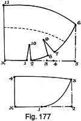Large Boat Collar (Fig. 177)
Fig. 177 illustrates the drafting of a large boat collar. A separate stand of cloth is utilized to fill in the stand of the collar below the fur edge at the back of the neck, a method of making that simplifies the operation and also requires less fur in the collar. This collar shape may be adapted to the majority of lapel shapes.
To draft—
Square from X.
- 1 from X = 4 inches.
- 2 from 1 = ¾ inch.
- 3 from X = 7½ inches.
- 4 from 3 = 1¼ inches.
- 5 from X = 12½ inches.
- 6 from 5 = 6½ inches.
- 7 squared from 4 = 1½ inches.
- 8 from 3 = 1 inch.
- Shape from 6 through 7 to 8 and 2.
- Shape from 7 and 8 to 9, making the dart 3 inches in length.
- Shape from 1 and 2 to 10, making the dart 3 inches in length.
- 11 from X = 10 inches. Shape from 6 to 11, adding 1½ inches of round.
This completes the shape of the actual collar. The separate stand lining must now be drafted.
The stand takes the shape of the under-collar stand section after the darts have been seamed out.
To draft—
Square from X.
- 1 from X = 4¾ inches.
- 2 from X = 10 inches.
- 3 from 2 = 5 inches.
- Shape 3 to 1 as shown.
- 4 from X = 5½ inches.
- Join 4 to 3 to complete the draft of the stand section.
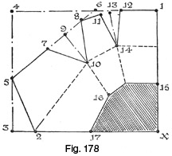Stand Fur Collar (Fig. 178)
The accompanying draft illustrates the cutting of a stand fur collar designed to stand up in the neck to form a deep double fold.
When the darts round the outer edge of the collar shape are sewn out, the fold and shape of the collar are formed, and a separate piece of material is then sewn in to make up the stand deficiency.
To draft—
Square from X.
- 1 from X = 12 inches.
- 2 from X = the length round the gorge and lapel of the coat to where the collar is intended to finish on the lapel.
- 3 from 2 = 2 inches.
- Square up from 3 to 4 equal to the length from X to 1.
- 5 from 3 = 5 inches.
- Join 5 to 2.
- 6 from 1 = 6 inches.
- Join 6 to 5.
- 7 from 5 = 4½ inches.
- 8 from 7 = 4½ inches.
- 9 is midway of 7 to 8.
- Square from 9 to 10 3½ inches.
- Join 7 to 10 and 8 to 10.
- Shape from 8 to 1 as indicated.
- 11 from 8 = 2 inches.
- 12 from 11 = 2 inches.
- 13 is midway of 11 to 12.
- Square from 13 to 14.
- Join 11 to 14 and 12 to 14, making the dart 3¾ inches in length.
- When the darts are seamed out, the collar will appear as points 15 to 16 and 17.
- The piece from X to 15, 16 and 17 forms the filled-in stand at the back of the neck, and, when this section is being cut, two seams should be allowed round each sewing edge.
The darts are all sewn out in the indicated marks.
Line the collar with canvas and wadding to obtain a stiff foundation for the stand.